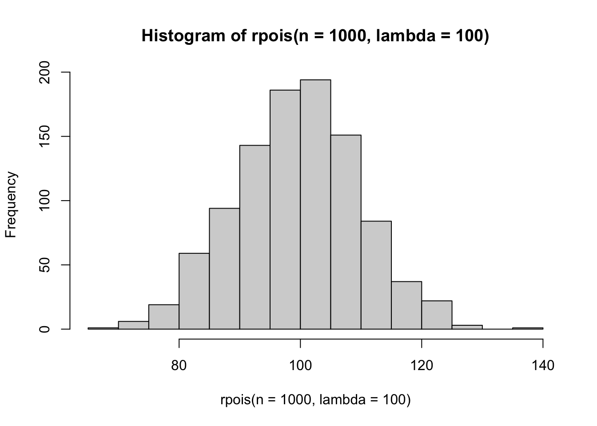
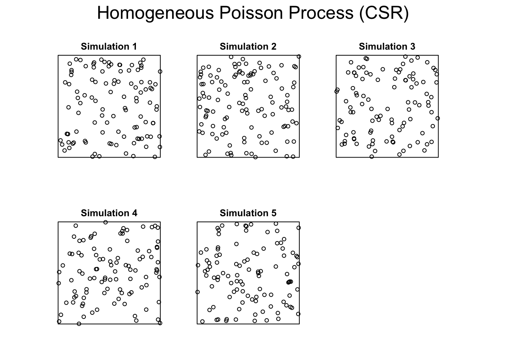
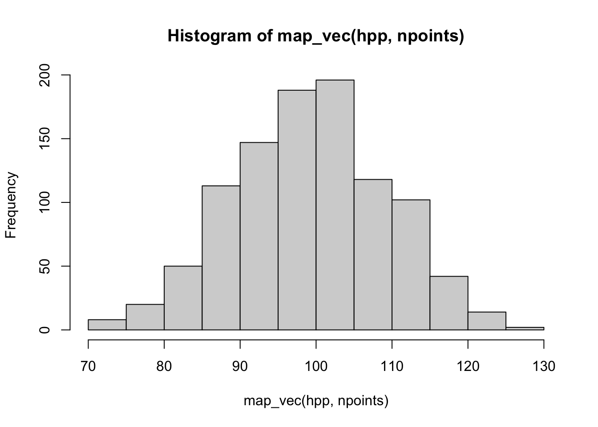
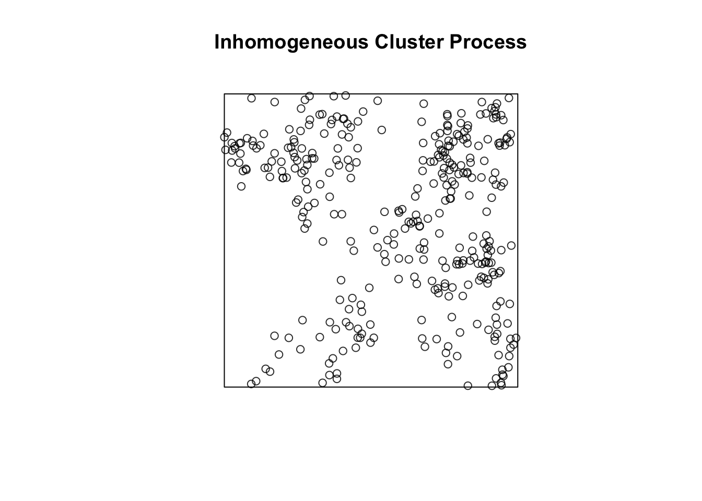
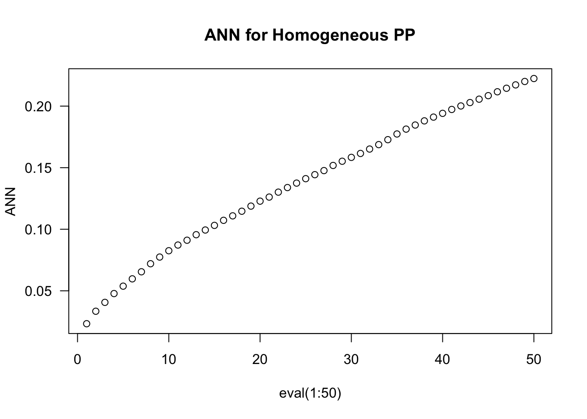

We’re going to focus on using spatstat to simulate and analyze point patterns so the only things you’ll need are packages for this lesson. You’ll still have to get our credentials and login to a new RStudio session.
Code
library(tidyverse)
── Attaching core tidyverse packages ──────────────────────── tidyverse 2.0.0 ──
✔ dplyr 1.1.4 ✔ readr 2.1.5
✔ forcats 1.0.1 ✔ stringr 1.5.2
✔ ggplot2 4.0.0 ✔ tibble 3.3.0
✔ lubridate 1.9.4 ✔ tidyr 1.3.1
✔ purrr 1.1.0
── Conflicts ────────────────────────────────────────── tidyverse_conflicts() ──
✖ dplyr::filter() masks stats::filter()
✖ dplyr::lag() masks stats::lag()
ℹ Use the conflicted package (<http://conflicted.r-lib.org/>) to force all conflicts to become errors
Code
library(spatstat)
Loading required package: spatstat.data
Loading required package: spatstat.univar
spatstat.univar 3.1-4
Loading required package: spatstat.geom
spatstat.geom 3.6-0
Loading required package: spatstat.random
spatstat.random 3.4-2
Loading required package: spatstat.explore
Loading required package: nlme
Attaching package: 'nlme'
The following object is masked from 'package:dplyr':
collapse
spatstat.explore 3.5-3
Loading required package: spatstat.model
Loading required package: rpart
spatstat.model 3.4-2
Loading required package: spatstat.linnet
spatstat.linnet 3.3-2
spatstat 3.4-1
For an introduction to spatstat, type 'beginner'
Code
library(terra)
terra 1.8.70
Attaching package: 'terra'
The following objects are masked from 'package:spatstat.geom':
area, delaunay, is.empty, rescale, rotate, shift, where.max,
where.min
The following object is masked from 'package:tidyr':
extract
Getting intuition for the Poisson Distribution
An important starting point for these point processes is an understanding of the Poisson distribution. The easiest way to do this is with the rpois function which generates random draws from a Poisson distribution defined by the value passed to lambda.
Code
hist(rpois(n =1000, lambda =100))

You can play around with lambda to see how this shifts the number of points you might expect under a fixed spatial domain.
Homogenous Point Processes
As we’ve discussed, homogeneous point processes are those with a fixed lambda - meaning everywhere on the landscape has the same probability of having an event (determined by lambda). We can demonstrate this with spatstat
Code
set.seed(2025)W <-owin(c(0,1), c(0,1))hpp <-rpoispp(lambda =100, win = W, nsim =1000)plot(hpp[1:5], main ="Homogeneous Poisson Process (CSR)")

Code
hist(map_vec(hpp, npoints))

As before, you set the window for the analysis using owin and then use rpoispp to generate the homogeneous Poisson point process with lambda=100. I use map_vec to pass the list of 1000 point processes (generated because I set nsim=1000) to the spatstat function npoints which simply counts the number of points in each ppp object. I used map_vec because I want this collapsed into a vector that I can pass to hist so that you can see that the mean value of the simulations is around 100 and equal to our rate.
Inhomogeneous Poisson Point Processes
An IPPP arises in situations where the rate is higher in some parts of the landscape than others. That is, lambda varies spatially. This might simply be a function of location (for example moving from north to south on the globe produces predictable changes in temperature). We can simulate this directly by writing a function for lambda that depends upon coordinates rather than leaving it a single fixed, number.
You’ll notice two things. First, the number of points tends to be higher in the upper right corner of the window. This is because we’ve made lambda a quadratic function of the x,y coordinates (meaning that for every unit you move right or up, the intensity doubles from the previous location). You’ll also notice that the actual, realized rate is less predictable (as the mean ends up being 200 despite our expectation that it should be 300).
IPPP with a raster
You don’t have to be restricted to (admittedly abstract) functions for generating IPPP. You can also use a raster to depict spatial variation in intensity. You might imagine a situation where you have data on a covariate (like elevation or vegetation type) that you think influences the rate of event occurrenc. I’ll demonstrate that here with a simulated raster:
The only thing that’s new here is the conversion of the simulated raster into an im object. spatstat requires rasters to be in this im class for many of the calculations, but it’s easy enough to convert a SpatRaster into an im by using the matrix of values from the raster and providing a few addtional arguments (see ?im for more details).
Clustered patterns
The last version of point processes we’ve discussed are those that display second-order inhomogeneity. These are situations where lambada may or may not vary across the landscape AND events are not independent of each other (there is attraction or repurepulsion). We can simulate this situation by again providing a function for lambda - to reflect heterogeneity in the rate - and then providing it to one of the clustered pattern generators in spatstat (check out ?rThomas or ?rMatClust for examples of clustering simulators).
Code
lambda_parent <-function(x, y){ 30* (x + y +0.2) }clustered <-rThomas(kappa = lambda_parent, sigma =0.05, mu =10, win = W)plot(clustered, main ="Inhomogeneous Cluster Process")

Characterizing Distance
Nearest neighbor distance
Estimating nearest neighbor distances is a little different in spatstat because we aren’t using the tidyverse. Don’t sweat that too much - apply behaves in a similar way to the map family of functions. The key bit here is the use of the nndist function.
Code
ANN <-apply(nndist(clustered, k=1:50),2,FUN=mean)plot(ANN ~eval(1:50), type="b", las=1, main ="ANN for Homogeneous PP")

Estimating $K
Finally, you can use the spatstat::Kest function to generate the Ripley’s K estimates we discussed in class. Try swapping Kest with Kinhom and check out the differences!
---title: "Point Patterns II"---## Getting StartedWe're going to focus on using `spatstat` to simulate and analyze point patterns so the only things you'll need are packages for this lesson. You'll still have to [get our credentials](https://rstudio.aws.boisestate.edu/) and login to a [new RStudio session](https://rstudio.apps.aws.boisestate.edu/).```{r ldlb}library(tidyverse)library(spatstat)library(terra)```## Getting intuition for the Poisson DistributionAn important starting point for these point processes is an understanding of the Poisson distribution. The easiest way to do this is with the `rpois` function which generates random draws from a Poisson distribution defined by the value passed to `lambda`.```{r}hist(rpois(n =1000, lambda =100))```You can play around with `lambda` to see how this shifts the number of points you might expect under a fixed spatial domain.## Homogenous Point ProcessesAs we've discussed, homogeneous point processes are those with a fixed lambda - meaning everywhere on the landscape has the same probability of having an event (determined by `lambda`). We can demonstrate this with `spatstat````{r}set.seed(2025)W <-owin(c(0,1), c(0,1))hpp <-rpoispp(lambda =100, win = W, nsim =1000)plot(hpp[1:5], main ="Homogeneous Poisson Process (CSR)")hist(map_vec(hpp, npoints))```As before, you set the window for the analysis using `owin` and then use `rpoispp` to generate the homogeneous Poisson point process with `lambda=100`. I use `map_vec` to pass the list of 1000 point processes (generated because I set `nsim=1000`) to the `spatstat` function `npoints` which simply counts the number of points in each `ppp` object. I used `map_vec` because I want this collapsed into a vector that I can pass to `hist` so that you can see that the mean value of the simulations is around 100 and equal to our rate. ## Inhomogeneous Poisson Point ProcessesAn IPPP arises in situations where the rate is higher in some parts of the landscape than others. That is, `lambda` varies spatially. This might simply be a function of location (for example moving from north to south on the globe produces predictable changes in temperature). We can simulate this directly by writing a function for `lambda` that depends upon coordinates rather than leaving it a single fixed, number.```{r}lambda_fun <-function(x, y){ 300* (x^2+ y^2) }ipp <-rpoispp(lambda = lambda_fun, win = W, nsim =1000)plot(ipp[1:5], main ="Inhomogeneous Poisson Process")hist(map_vec(ipp, npoints))```You'll notice two things. First, the number of points tends to be higher in the upper right corner of the window. This is because we've made lambda a quadratic function of the x,y coordinates (meaning that for every unit you move right or up, the intensity doubles from the previous location). You'll also notice that the actual, realized rate is less predictable (as the mean ends up being 200 despite our expectation that it should be 300).### IPPP with a `raster`You don't have to be restricted to (admittedly abstract) functions for generating IPPP. You can also use a raster to depict spatial variation in intensity. You might imagine a situation where you have data on a covariate (like elevation or vegetation type) that you think influences the rate of event occurrenc. I'll demonstrate that here with a simulated raster:```{r}library(spatstat.geom)r <-rast(nrows=50, ncols=50, xmin=0, xmax=1, ymin=0, ymax=1)values(r) <-exp(-3* ((xFromCell(r, 1:ncell(r)) -0.5)^2+ (yFromCell(r, 1:ncell(r)) -0.5)^2))r_im <-as.im(as.matrix(r),xrange =c(0,1),yrange =c(0,1))pp_inhom_rast <-rpoispp(lambda = r_im)par(mfrow=c(1,2))plot(r_im, main="Simulated Intensity (raster)")plot(pp_inhom_rast, add=TRUE, pch=19, cex=0.5)plot(pp_inhom_rast, main="Inhomogeneous Poisson Process")```The only thing that's new here is the conversion of the simulated raster into an `im` object. `spatstat` requires rasters to be in this `im` class for many of the calculations, but it's easy enough to convert a `SpatRaster` into an `im` by using the matrix of values from the raster and providing a few addtional arguments (see `?im` for more details).## Clustered patternsThe last version of point processes we've discussed are those that display second-order inhomogeneity. These are situations where lambada may or may not vary across the landscape **AND** events are not independent of each other (there is attraction or repurepulsion).We can simulate this situation by again providing a function for lambda - to reflect heterogeneity in the rate - and then providing it to one of the clustered pattern generators in `spatstat` (check out `?rThomas` or `?rMatClust` for examples of clustering simulators).```{r}lambda_parent <-function(x, y){ 30* (x + y +0.2) }clustered <-rThomas(kappa = lambda_parent, sigma =0.05, mu =10, win = W)plot(clustered, main ="Inhomogeneous Cluster Process")```## Characterizing Distance### Nearest neighbor distanceEstimating nearest neighbor distances is a little different in `spatstat` because we aren't using the `tidyverse`. Don't sweat that too much - `apply` behaves in a similar way to the `map` family of functions. The key bit here is the use of the `nndist` function. ```{r}ANN <-apply(nndist(clustered, k=1:50),2,FUN=mean)plot(ANN ~eval(1:50), type="b", las=1, main ="ANN for Homogeneous PP")```### Estimating $K#Finally, you can use the `spatstat::Kest` function to generate the Ripley's K estimates we discussed in class. Try swapping `Kest` with `Kinhom` and check out the differences!```{r}plot(Kest(hpp[[1]]), main="K: Homogeneous Poisson")plot(Kest(ipp[[1]]), main="Kinhom: Inhomogeneous Poisson")plot(Kest(clustered), main="Kinhom: Clustered")```